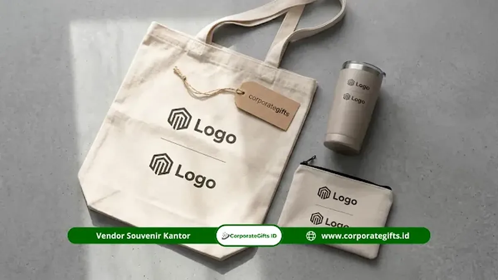

Corporate Gifts ID - Momen yang tepat untuk memberikan souvenir mitra kampus swasta meliputi penandatanganan Memorandum of Understanding (MoU), penandatanganan Memorandum of Agreement (MoA), kunjungan kerja atau studi banding, kuliah tamu dan seminar bersama, serta peringatan tahunan kerja sama kelembagaan.
Setiap momentum memiliki bobot protokoler, hierarki penerima, dan tingkat formalitas yang berbeda. Oleh karena itu, kurasi jenis barang, standar material, dan kemasan cinderamata yang diberikan perlu disesuaikan agar mampu mencerminkan komitmen serta keseriusan kemitraan strategis antar-institusi.
- Penandatanganan MoU: Momen paling formal level pimpinan puncak yang membutuhkan souvenir gift set premium berkonsep dual-logo.
- Kunjungan Kerja & Studi Banding: Memerlukan cinderamata fungsional dan ringkas yang praktis dibawa dalam perjalanan pulang delegasi.
- Penandatanganan MoA: Tindak lanjut teknis MoU yang bersifat operasional sehingga souvenir dapat dibuat lebih tematis sesuai bidang kerja sama.
- Kuliah Tamu & Seminar: Cocok menggunakan cinderamata bernilai edukasi, seperti paket seminar kit profesional dengan identitas institusi yang kuat.
- Peringatan Tahunan Kemitraan: Momen bernilai historis yang tepat untuk cinderamata berunsur apresiasi dan penghargaan jangka panjang.
Mengapa Konteks Momen Menentukan Jenis Souvenir Mitra Kampus Swasta?
Konteks acara menentukan jenis souvenir mitra kampus swasta karena setiap agenda kelembagaan membawa dinamika audiens, tingkat protokoler, dan sasaran komunikasi yang berlainan.
Memberikan cinderamata yang tidak selaras dengan bobot momen berisiko mendistorsi impresi profesionalisme perusahaan Anda di hadapan jajaran rektorat, dekanat, dosen, maupun mahasiswa. Sebagai contoh, memberikan barang promosi massal bernilai rendah pada seremoni penandatanganan nota kesepahaman rektor dapat dipandang kurang menghargai kemitraan tersebut.
Dalam tata kelola hubungan kelembagaan (institutional relations) di lingkungan pendidikan tinggi, ketepatan pemilihan cinderamata kerap dijadikan indikator sederhana namun fundamental untuk menilai seberapa matang persiapan dan komitmen jangka panjang instansi Anda dalam berkolaborasi.
Matriks Rekomendasi Souvenir Kemitraan Kampus
Berikut rangkuman perbandingan konteks momen acara kampus swasta, karakteristik kebutuhan cinderamata, dan rekomendasi produk yang tepat:
| Momentum Kemitraan | Tingkat Formalitas | Rekomendasi Cinderamata | Kesan yang Dibangun |
|---|---|---|---|
| Penandatanganan MoU | Sangat Tinggi (Pimpinan Puncak) | Gift set hardbox (Notebook hardcover, pulpen metal grafir, tumbler custom dual-logo) | Kesetaraan, prestise, dan komitmen strategis |
| Penandatanganan MoA | Tinggi (Fakultas / Program Studi) | Kit tematik program (Leather desk mat, flashdisk kartu riset, pouch kerja) | Sinergi operasional dan relevansi profesional |
| Kunjungan Kerja / Studi Banding | Menengah (Delegasi Kampus) | Tote bag kanvas premium, tumbler travel vacuum, set alat tulis ringkas | Keramahan, kenyamanan mobilitas, dan fungsional |
| Kuliah Tamu & Seminar | Menengah hingga Edukatif | Plakat pembicara + Seminar kit (Blocknote, pulpen, lanyard ID card, tote bag) | Apresiasi akademis dan penguatan brand awareness |
| Peringatan Tahunan Kemitraan | Tinggi (Evaluasi Program) | Plakat kristal / kayu ukir commemorative, hampers korporat edisi khusus | Penghargaan loyalitas dan rekognisi historis |
Momen 1: Penandatanganan MoU - Momen Paling Formal
Penandatanganan Memorandum of Understanding (MoU) merupakan tonggak awal kerja sama formal antara korporasi dengan perguruan tinggi swasta.
Acara ini umumnya diselenggarakan dalam tata protokoler resmi yang dihadiri oleh jajaran rektor, wakil rektor, direksi perusahaan, dan kerap disaksikan oleh perwakilan media massa maupun mitra industri terkait.
Souvenir yang Tepat untuk Penandatanganan MoU
Cinderamata untuk momen penandatanganan nota kesepahaman wajib mencerminkan prinsip kesetaraan derajat, saling menghormati, dan kredibilitas tinggi.
Pilihan paling ideal adalah paket gift set souvenir kantor premium dalam balutan hardbox eksklusif. Kombinasi item di dalamnya mencakup 2 hingga 3 produk saling melengkapi, seperti buku agenda hardcover berbahan kulit sintetis premium, pena metal berteknologi putar dengan grafir laser presisi, serta tumbler stainless steel insulasi vakum.
Setiap produk diwajibkan menampilkan dual-logo (logo perusahaan Anda berdampingan secara proporsional dengan lambang resmi universitas swasta mitra). Pastikan tata letak grafir atau sablon rapi dan tidak timpang untuk menjaga martabat kedua institusi. Simak juga panduan kami tentang rahasia souvenir VIP berkesan.
Momen 2: Penandatanganan MoA - Lebih Spesifik dan Tematis
MoA (Memorandum of Agreement) atau Perjanjian Kerja Sama (PKS) merupakan dokumen tindak lanjut operasional dari MoU payung. MoA mengatur rincian teknis program, seperti program magang bersertifikat, pendirian laboratorium riset bersama, atau program beasiswa mahasiswa.
Dokumen ini umumnya ditandatangani di tingkat fakultas, dekanat, ketua jurusan, atau kepala unit kerja terkait.
Souvenir yang Tepat untuk Penandatanganan MoA
Karena MoA berfokus pada ruang lingkup kerja spesifik, souvenir yang disiapkan dapat dirancang secara lebih tematis dan relevan dengan bidang kolaborasi.
Misalnya, apabila MoA berfokus pada program penyerapan tenaga kerja atau magang industri, cinderamata dapat berupa career kit seperti card holder kulit asli berlogo, USB flashdisk berkapasitas besar, dan binder organizer kerja. Jika menyangkut penelitian sains dan teknologi, suvenir beraksen perangkat modern seperti wireless charging pad atau laser pointer multifungsi menjadi opsi yang sangat berdaya guna.

Paket souvenir dual-logo fungsional berupa tote bag, tumbler, dan organizer pouch untuk mitra kampus swasta.
Momen 3: Kunjungan Kerja dan Studi Banding Delegasi Kampus
Kunjungan kerja resmi (benchmarking visit) atau studi banding antar-institusi memiliki atmosfer yang lebih hangat dan dialogis dibanding penandatanganan dokumen formal.
Delegasi dari kampus swasta mitra biasanya mengunjungi kantor pusat, fasilitas pabrik, atau pusat riset perusahaan Anda untuk meninjau fasilitas kerja nyata dan mendiskusikan implementasi program kolaborasi di lapangan.
Souvenir yang Tepat untuk Kunjungan Kerja
Cinderamata kunjungan kerja sebaiknya mengedepankan aspek kepraktisan (portability) dan fungsionalitas tinggi, mengingat para anggota delegasi kerap melakukan perjalanan dinas lintas kota:
- Tote Bag Kanvas Premium: Memudahkan delegasi membawa dokumen presentasi, proposal kerja sama, dan berkas hasil studi banding.
- Tumbler Travel Insulasi: Menjaga hidrasi para tamu selama rangkaian agenda tur fasilitas dan rapat maraton.
- Set Alat Tulis Ringkas dalam Pouch: Berisi pulpen, sticky notes, dan flashdisk kartu yang mudah diselipkan ke dalam koper atau tas kerja jinjing.
Jumlah alokasi suvenir sebaiknya disesuaikan dengan daftar resmi peserta delegasi penerima kunjungan yang hadir agar tidak ada tamu kehormatan yang terlewatkan.
Momen 4: Kuliah Tamu, Lokakarya, dan Seminar Bersama
Kuliah tamu praktisi industri, lokakarya keterampilan vokasi, atau seminar bersama adalah momentum yang melibatkan audiens berskala luas, mulai dari jajaran dekanat, dosen pendamping, hingga ratusan mahasiswa peserta.
Souvenir yang Tepat untuk Kuliah Tamu
Untuk momentum akademik ini, stratifikasi pengadaan cinderamata menjadi strategi yang paling efisien dalam mengelola anggaran:
- Souvenir Kehormatan (Narasumber & Dekanat): Berikan plakat akrilik/kayu eksklusif dipadukan dengan bingkisan hadiah dosen dan pimpinan akademik bermaterial premium.
- Merchandise Peserta Umum (Mahasiswa): Sediakan paket seminar kit hemat dan fungsional yang mencakup tote bag spunbond/blacu, blocknote bergaris, pulpen berlogo, dan sertifikat holder. Cek panduan penganggarannya di tips memilih seminar kit sesuai budget.
Pastikan pemilihan jenis suvenir selaras dengan tema lokakarya. Jika acara bertemakan transformasi digital, menyematkan aksesori teknologi promosi akan memberikan kesan modern yang mendalam.
Momen 5: Peringatan Tahunan Kerja Sama dan Evaluasi Program
Bagi korporasi yang menjaga hubungan kelembagaan secara berkelanjutan, menyelenggarakan sesi evaluasi tahunan (annual partnership review) merupakan agenda wajib untuk meninjau capaian program yang telah berjalan.
Momen ini menjadi waktu yang tepat untuk menyampaikan rasa terima kasih atas sinergi yang solid selama setahun penuh.
Souvenir yang Tepat untuk Peringatan Tahunan
Cinderamata peringatan tahunan idealnya memiliki nilai kenangan (commemorative value) yang kental. Plakat berukir ukiran tanggal bersejarah dimulainya kerja sama, atau paket hampers korporat eksklusif berisi produk wellness artisan dan cinderamata kustom edisi terbatas, sangat tepat untuk memperkuat komitmen perpanjangan kontrak kerja sama di tahun-tahun mendatang.
Pertanyaan Seputar Souvenir Mitra Kampus Swasta (FAQ)
Kesimpulan Praktis
Memilih souvenir mitra kampus swasta bukan semata-mata mengenai produk fisik yang dibeli, melainkan seni memahami konteks momen seremoni, hierarki penerima penghargaan, serta pesan kelembagaan yang ingin diwujudkan.
Setiap momentum kerja sama membawa karakter komunikasinya sendiri. Souvenir yang dirancang dengan ketelitian material, teknik kustomisasi logo presisi, dan kemasan rapi akan secara nyata memperkuat citra profesional instansi Anda di mata dunia akademisi.
Kunjungi e-katalog resmi Corporate Gifts atau hubungi tim konsultan kami untuk merancang paket cinderamata kemitraan kampus swasta terbaik yang sesuai dengan anggaran dan jadwal kegiatan Anda.
Disclaimer: Penataan dual-logo, pemilihan spesifikasi kemasan gift box, dan penyesuaian isi paket seminar kit kemitraan di CorporateGifts.ID dapat dipersonalisasi penuh mengikuti manual standar visual identitas institusi Anda.